Case Study
Balcony application: Driving usability improvements through iterative testing
Balcony is a mobile application that helps apartment owners generate and manage solar energy through connected microinverter and battery systems.
I led usability-driven design improvements across core user flows to help users optimize their energy usage.

Overview
Project
Role
Lead UX research in Europe
Timeline
Feb - May 2025
Platform
Mobile (iOS / Android)
Focus
Usability testing, prioritization, solution design
Goals
- Make core flows accessible for non-technical users.
- Clarify energy production, usage, and system behavior.
- Align the experience with apartment owners’ needs and mental models.
- Support onboarding and product adoption through intuitive journeys.
Chalenge
- Reduce product complexity for a non-technical audience.
- Adapt content and features for apartment owners.
- Discover goals, needs, and frustrations of this new target audience.
- Create clearer user journeys to support adoption.
Friction points

Key UX Friction Points
As the app transitions from a B2B to a B2C product, feedback needs to evolve into a simple customer support flow that allows apartment owners to easily report device and app issues. Managing multiple homes should be intuitive, with clear entry points and fast switching between installations. Navigation must reflect core user tasks and remain simple for non-technical users. The language used throughout the app should be friendly and jargon-free to improve clarity and accessibility. Support and account areas should prioritize key actions and present information progressively to reduce cognitive load. Finally, energy flow visuals should closely reflect real installations to align with users’ mental models and build trust in how energy is produced and consumed.
Research and validation
From discovery to validation
This project followed a multi-phase design process with varying levels of collaboration. I led user research, competitive analysis, usability testing, and validation, with a primary focus on the European market. During ideation and implementation, I partnered closely with other designers, product, and engineering to ensure alignment across disciplines.
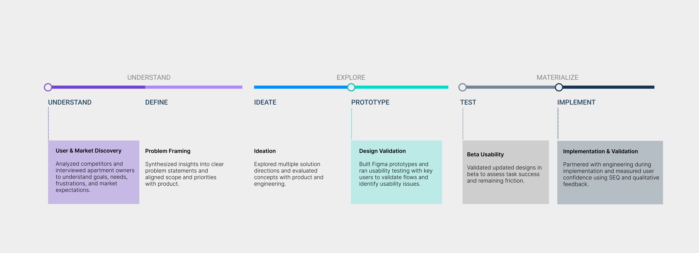
Validation, research & Metrics
Different metrics were applied across research and validation phases based on technical feasibility and business goals. Both qualitative and quantitative data informed design decisions throughout the process.
In early phases, I focused primarily on qualitative insights, gathering input from users and internal stakeholders to define requirements and identify key usability challenges.
Once the beta version was released to a selected user group, validation shifted toward measurable feedback. We collected Single Ease Question (SEQ) responses directly within the application and conducted interviews with key users to better understand real-world usage and remaining friction points.
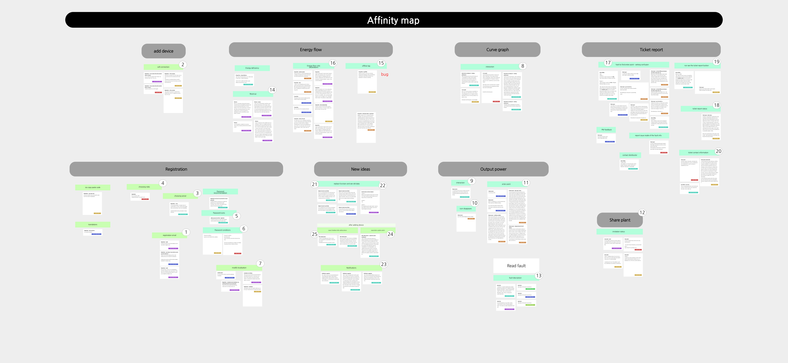
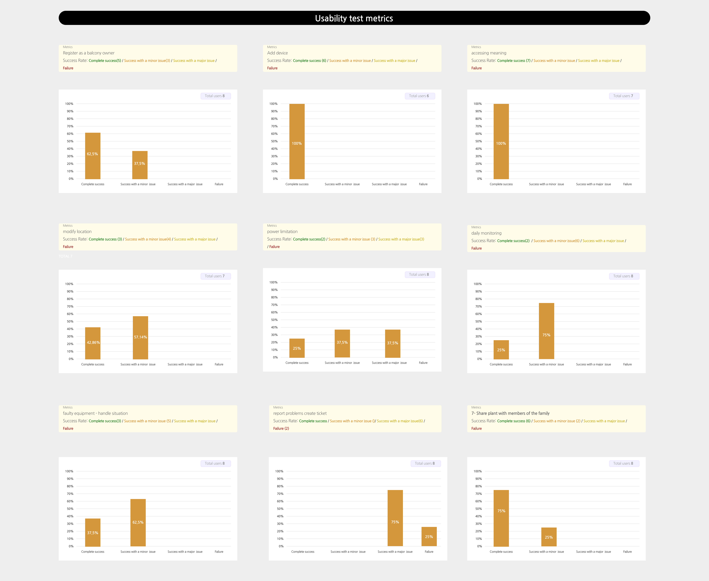
Design iteration
The presented screens represent a new branch of the mobile application, focused on refining interaction patterns and simplifying navigation and information architecture, based on stakeholder-approved requirements.
Developed through close collaboration with product and engineering, the resulting interface reflects validated design decisions addressing usability, information hierarchy, and alignment with existing design standards.
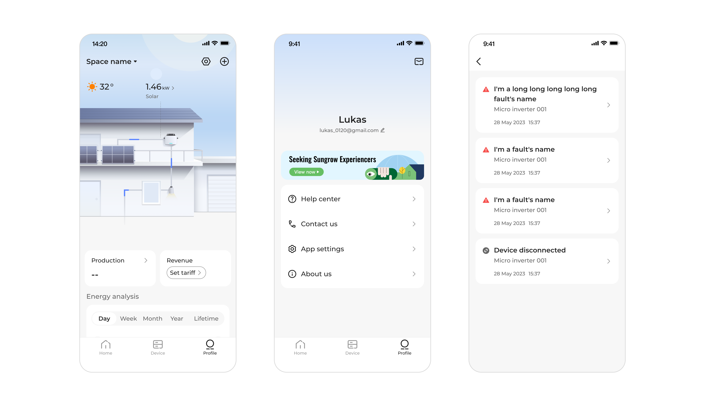
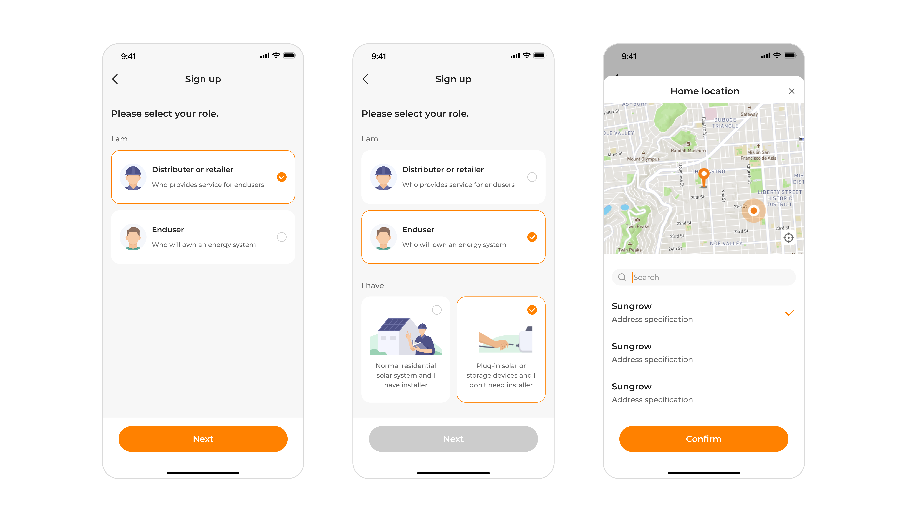
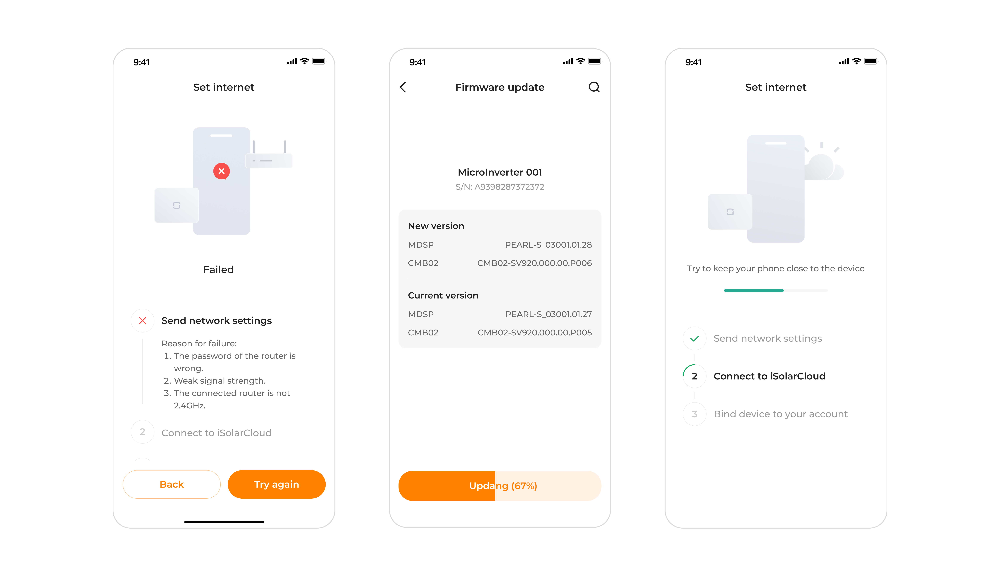
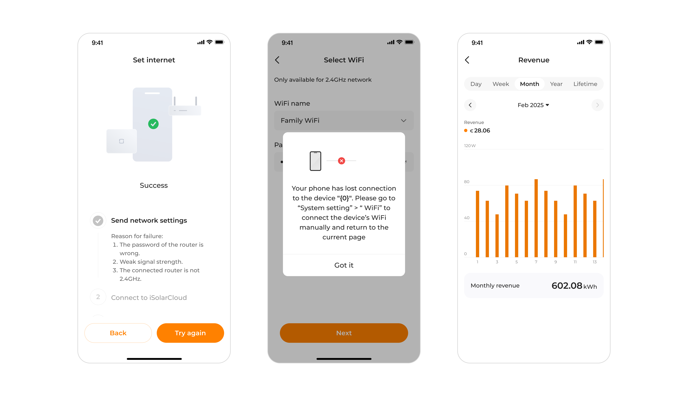
Key Differences Between Product Branches
Energy Overview & System Visualization
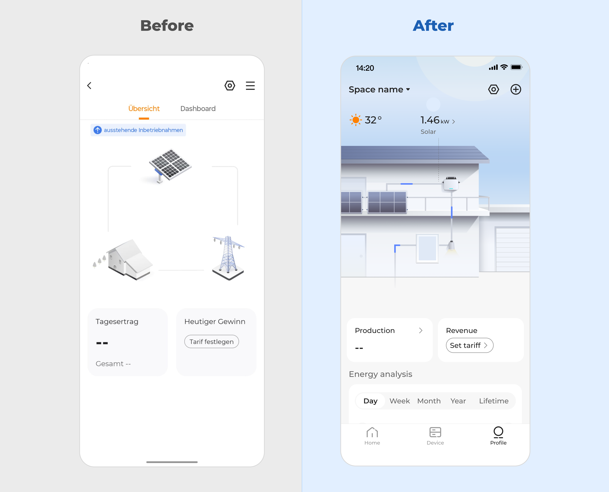
Before
- Energy flow was represented abstractly, requiring users to mentally map components and relationships.
- Key metrics were separated from system context, reducing comprehension.
After
- Replaced abstract diagrams with a contextual home visualization, directly mapping energy flow to physical elements.
- Integrated real-time data into the environment view, supporting immediate understanding of production and usage.
Usability Impact: Improved mental model alignment and faster interpretation of energy status.
Notifications & System Messages
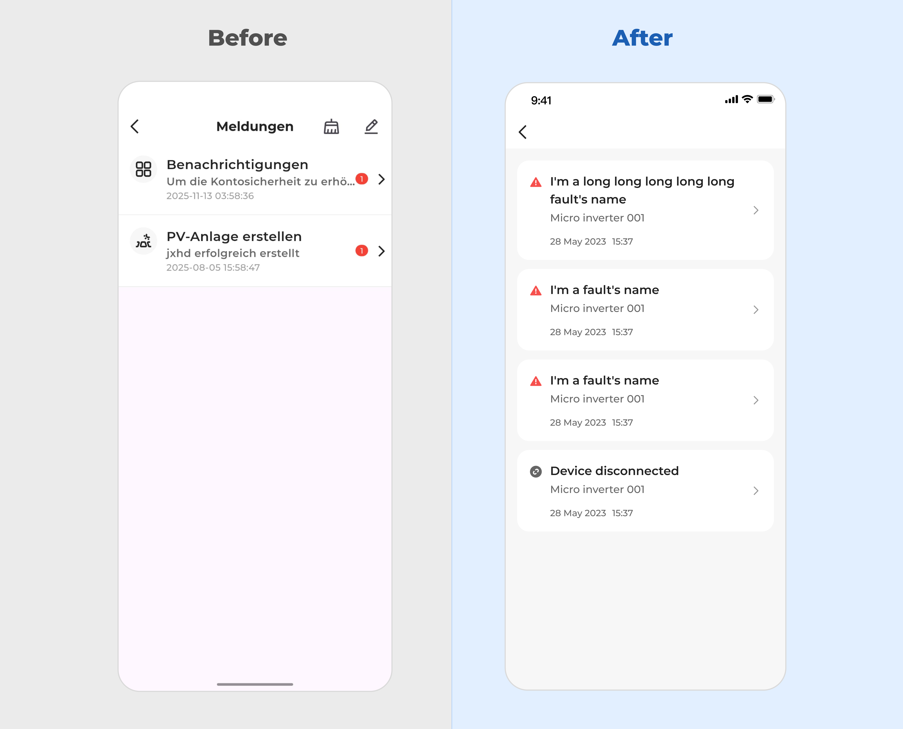
Before
- Messages lacked prioritization and visual distinction, making it difficult to identify critical alerts.
- Long titles and dense layouts reduced scannability.
After
- Introduced card-based notifications with clear severity indicators and improved spacing.
- Improved content hierarchy to highlight system faults and device status at a glance.
Usability Impact: Increased visibility of critical events and faster recognition of system issues.
Profile and account manager
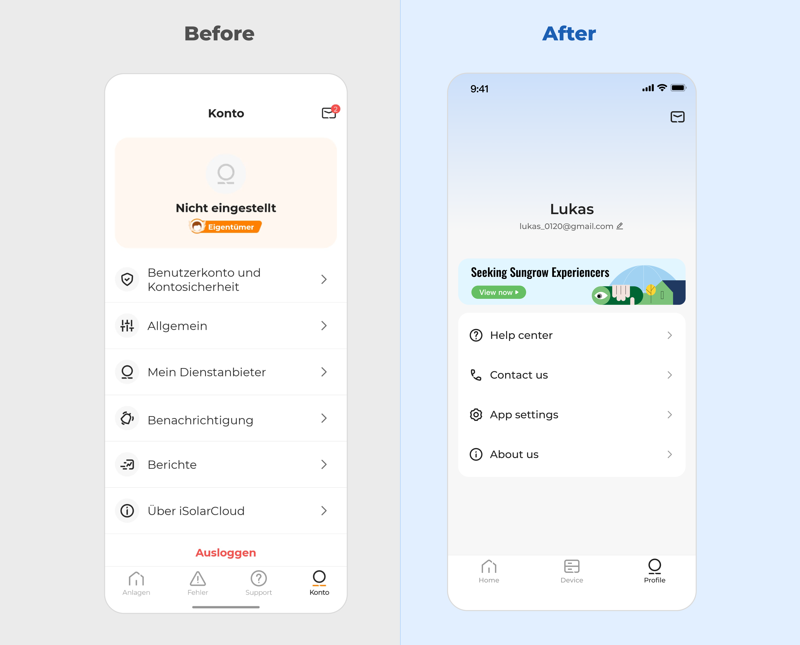
Before
- Account information and settings were fragmented across multiple sections, increasing scan time.
- User identity and key actions lacked visual hierarchy.
After
- Centralized account information with a clear profile header and grouped support actions.
- Simplified menu structure to surface primary tasks while reducing secondary clutter.
Usability Impact: Faster access to key account actions and improved clarity around user identity and ownership.
Space selection and navigation
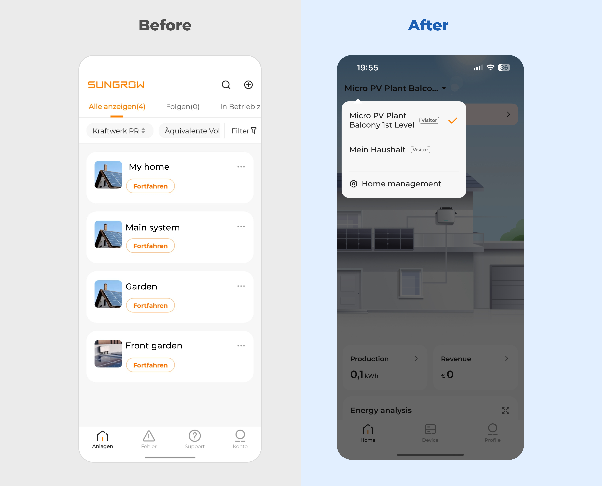
Before
- Users were presented with a flat list of systems, making it difficult to understand context or hierarchy.
- Primary actions were unclear, increasing cognitive load when switching between spaces.
After
- Introduced a clear space selector with contextual naming, enabling faster orientation and switching.
- Reduced visual noise by consolidating navigation into a focused entry point.
Usability Impact: Improved discoverability of spaces and reduced effort required to navigate between systems.
Next steps
This phase introduced a simplified experience for balcony PV users, focused on essential features and non-technical accessibility.
Next, the same design structure will be extended to larger installations, maintaining consistent navigation and layouts while progressively introducing advanced functionality. This approach supports multiple user scenarios within a unified product experience.